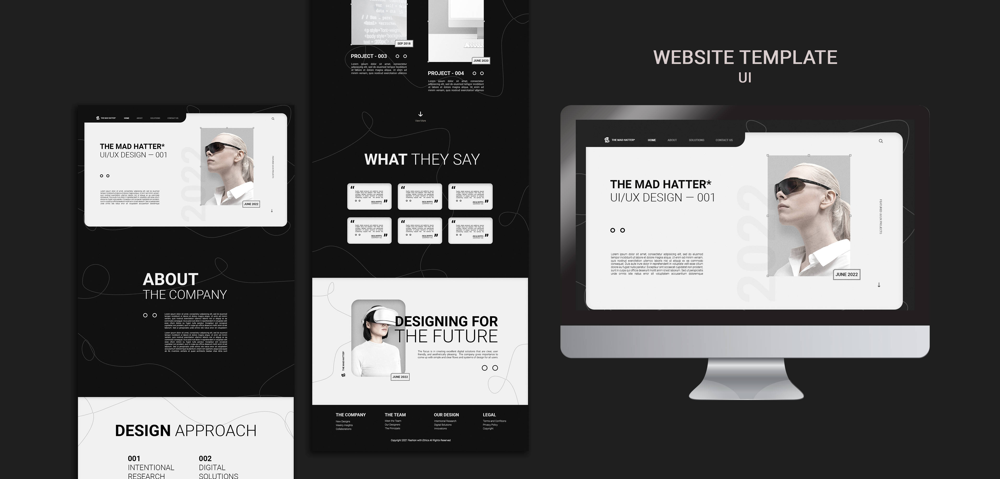

Сколько стоит сайт под ключ?
Сколько стоит сайт под ключ: полное руководство по ценам и факторам.
💰 Этот вопрос волнует бизнес любого масштаба, потому что стоимость зависит от множества факторов: масштаба проекта, требуемого функционала, качества дизайна и скорости реализации. В этой статье мы разберём, какие элементы формируют цену на сайт под ключ, какие существуют диапазоны по сегментам и как выбрать подрядчика так, чтобы результат соответствовал бюджету.
🧩 Сайт под ключ — это полный цикл от анализа задачи до запуска и передачи админ‑панели под управлением заказчика. Цена на такой проект варьируется существенно: от недорогих лендингов до крупных корпоративных порталов и интернет-магазинов. В статье мы рассмотрим, какие этапы включает работа, какие факторы влияют на стоимость, и приведём ориентиры по сегментам, чтобы вы могли планировать бюджет и сравнивать предложения от агентств и фрилансеров.
🧭 Важно понимать, что в услугу входят разные блоки: аналитика и постановка задачи, UX и дизайн, вёрстка и фронтенд‑разработка, backend и CMS, подготовка и наполнение контента, основной функционал, базовая SEO‑настройка, безопасность и хостинг, тестирование и запуск, а также поддержка и обслуживание. В совокупности эти элементы образуют целостную картину того, что вы получаете за цену сайта под ключ. При этом следует помнить, что конкретная смета формируется с учётом выбранной платформы, объёмов контента, уровня дизайна и числа необходимых интеграций с внешними системами.
💡 От чего зависят цены. Разные факторы вносят вклад в итоговую стоимость: тип проекта, дизайн, функционал, контент, SEO и маркетинг, инфраструктура и безопасность, а также сроки реализации. Тип проекта можно разделить на лендинг или сайт‑визитку, сайт под ключ для малого и среднего бизнеса, корпоративный сайт и интернет‑магазин; каждый сегмент имеет свои требования к объёму страниц, сложности навигации и наличию интеграций. Дизайн может быть реализован на готовом шаблоне, что дешевле, или в виде уникального дизайна под бренд, что требует больше времени и ресурсов. Функционал играет роль в цене: простые формы и лента новостей обходятся дешевле, чем каталоги с фильтрами, онлайн‑оплата и интеграции с CRM или ERP. Контент, включая тексты и медиа, может быть создан заказчиком или же заказчик платит за его разработку, что заметно влияет на итоговую стоимость. SEO и маркетинг различаются по объёму работ: базовая настройка на старте часто входит в пакет, а продвинутая SEO‑стратегия и контент‑план — отдельно оплачиваются. Инфраструктура включает выбор хостинга, безопасность, резервное копирование и ускорение загрузки, где премиум‑решения стоят дороже. Наконец, сроки, особенно при срочных проектах, требуют перераспределения ресурсов и ведут к удорожанию.
🗓️ Этапы работ и временные рамки. Обычно проект делится на несколько стадий: аналитика и планирование занимают от 1 до 7 дней, прототипирование и дизайн — от 1 до 3 недель, верстка и разработка — от 2 до 6 недель, наполнения контентом и настройка SEO — от 1 до 3 недель, тестирование и подготовка к запуску — от 3 до 14 дней, запуск и передача админ‑панели — 1–3 дня. Однако для сложных проектов сроки могут быть больше, а сжатые сроки требуют дополнительного планирования и ресурсов, что напрямую влияет на итоговую стоимость.
💸 Примеры цен по сегментам. Стоимость зависит от рынка, региона и практик агентства, но ориентировочно можно представить следующий разброс: для лендинга или сайта‑визитки на 1–5 страниц цена варьируется примерно от 40 000 до 150 000 рублей; для сайта под ключ для малого бизнеса на 5–15 страниц с базовым функционалом диапазон обычно составляет 150 000–350 000 рублей; корпоративный сайт на 15–40 и более страниц с продвинутым дизайном и интеграциями может стоить от 350 000 до 900 000 рублей; интернет-магазин с каталогом, оплатой и необходимыми интеграциями часто начинается от 600 000 рублей и может достигать 2 500 000 рублей и выше в зависимости от числа товаров и сложности связок. В долларах ориентир примерно тот же по соотношению, но конкретные цифры зависят от региона и уровня сервиса: для лендинга 500–1800 USD, для сайта под ключ малого бизнеса 2000–6000 USD, для корпоративного сайта 6000–15 000+ USD, для интернет‑магазина 8000–30 000+ USD.
🤝 Как выбрать подрядчика. При выборе стоит смотреть на портфолио и кейсы, наличие проектов в вашей нише и качество UX, прозрачность цены и понимание того, какие работы включены в стоимость, а какие идут за доплату. Важна поддержка и гарантия: какие сроки реакции на проблемы и что входит в гарантийный период. Коммуникация и таймлайн должны быть понятны, а дорожная карта проекта — реальна. Также полезно учитывать как осуществляется контент и тексты: кто отвечает за их создание и уникальность. Репутация на рынке, наличие отзывов и конкретные кейсы с метриками помогают сделать обоснованный выбор. Обратите внимание на механику изменений: как дорого вносить правки после запуска и есть ли пакетные обновления.
💡 Как сэкономить на сайте под ключ без потери качества. Чтобы снизить стоимость, можно использовать готовые решения и шаблоны там, где это уместно, чётко сформулировать требования на старте, чтобы не возникало «не знаю, что хочу», иметь готовый контент или минимальный набор медиа, что ускоряет работу и снижает затраты, применять поэтапную оплату и разбивать работу на фазы, чтобы тестировать гипотезы и корректировать курс без крупных перерасходов, ограничивать интеграции теми модулями, которые действительно нужны, чтобы не платить за сложные модули, и обязательно проводить тестирование и QA на ранних этапах, чтобы избежать переработок после запуска. Важно помнить, что долгосрочная экономия достигается за счёт эффективной архитектуры проекта и точной постановки целей.
❓ Часто задаваемые вопросы. Сколько времени обычно занимает создание сайта под ключ, и на этот счёт влияют объём работ и сложность проекта: чаще всего это от 4–6 недель для лендинга до 2–4 месяцев для крупного корпоративного сайта и интернет‑магазина. Что входит в пакет «сайт под ключ», и отвечая на этот вопрос, можно сказать, что это анализ цели, дизайн, верстка, CMS, наполнения, базовая SEO‑настройка, тестирование, запуск и передача админ‑панели, а также поддержка в рамках гарантийного срока, хотя детализация зависит от подрядчика. Можно ли начинать с минимального бюджета и наращивать функционал позже? Да, многие проекты стартуют с базового пакета, а функционал добавляют по мере роста бизнеса. Как выбрать между готовым шаблоном и уникальным дизайном? Готовый шаблон дешевле и быстрее, но уникальный дизайн лучше отражает бренд и может повышать конверсию, поэтому выбор зависит от целей и бюджета. Включает ли сайт под ключ SEO на запуске? Обычно базовая SEO‑настройка включена в пакет и охватывает тех SEO, карту сайта и метатеги; продвинутая SEO‑работа чаще идет как отдельный пункт договора. Что если нужна интеграция с CRM или ERP? Интеграции увеличивают бюджет и сроки, но без них многие бизнес‑процессы остаются ручными; обсудите требования на этапе ТЗ.
🏁 Заключение. Сколько стоит сайт под ключ, зависит от масштаба проекта, требуемого функционала, уровня дизайна и объёма контента. Чем яснее вы сформулируете задачу, тем точнее будет смета и тем меньше риск перерасходов. Инвестиции в качественный сайт под ключ окупаются за счёт повышения конверсий, упрощения бизнес‑процессов и роста онлайн‑видимости. Готов обсудить ваш проект и подобрать оптимальное решение под ваш бюджет: напишите кратко о целях сайта, ожидаемом функционале и целевой аудитории, и мы поможем составить ориентировочную смету и дорожную карту.